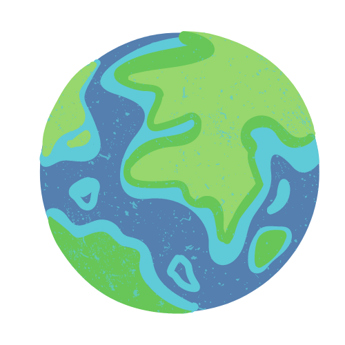

An Introduction to Remote Sensing
id: ppc
bibliography: references.bib
Test
Danger
Learning Diary is under-progress
more test
citation test: [@ravanelli2018]
some more test
equation test:
\[ E=mc^2\ \]
and some more

and some more

test
#id: ppc
#bibliography: references.bib